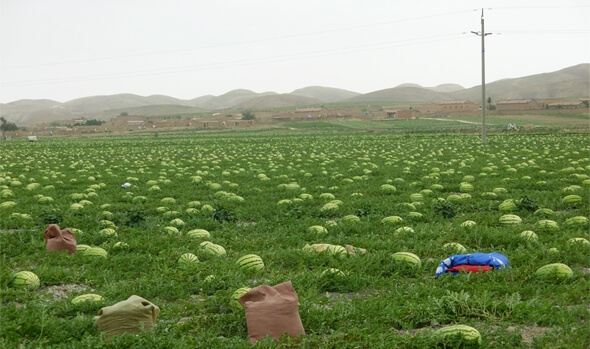
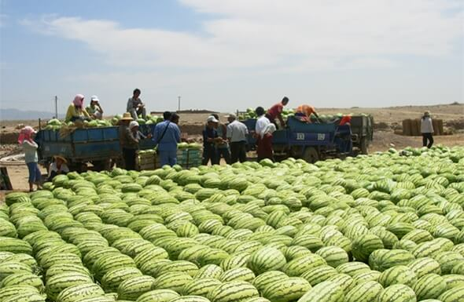

硒砂瓜物联码视频
硒砂瓜，被誉为“石头缝中长出的西瓜”。香山硒砂瓜的品种并不特殊，却能在砂石缝里茁壮成长，全因干旱逆境之下，农人孜孜以求不断选育，摸索出一套“旱地压砂种瓜法”。此法需在砂地上压石块，白天减少水分蒸发，夜晚凝聚水汽从石块渗至地下。风化的砂砾分解浸入土壤，以天然方式增加土壤中的矿物养分。“硒”与“砂”自然融合，故中卫硒砂瓜又被称为“石缝上的西瓜”。
香山硒砂瓜每年4-5月份种植，7-9月份成熟上市，个头超大，每颗瓜重25-30斤，适合多人一起享用。成熟的瓜体呈椭圆形，质地坚韧，极耐贮运，靠砂石的一面会自然形成多道瓜痕，这是硒砂瓜的独家印记。
据农业部乳品质量监督检验测试中心检验，香山硒砂瓜葡萄糖含量为6.2%、蔗糖含量为4.09%，还含有胡萝卜素、维生素、18种氨基酸和锌、钙、钾、硒等微量元素，最特别的是每千克硒砂瓜含有硒元素0.0056毫克，具有延年益寿、抗衰老、抗癌作用。
技术支持：唯简物联 联系电话：15825369999